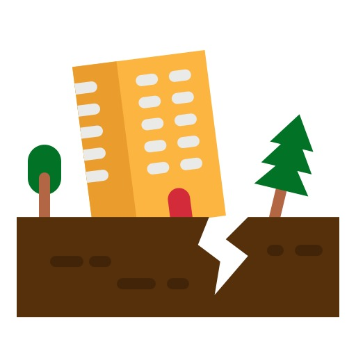
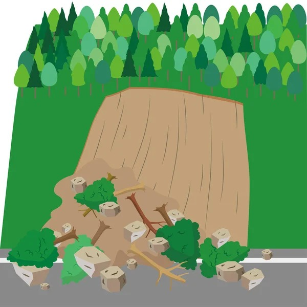

Toplanma Alanları
Deprem İçin Toplanma Alanları

İstanbul: Küçükçekmece - Atakent Mahallesi- İstanbul: Pendik - Kurtköy Meydanı
- İstanbul: Bakırköy - Ataköy Marina
Yangın İçin Toplanma Alanları
- İstanbul: Taksim Meydanı
- İstanbul: Emin Ali Paşa Mahallesi
- İstanbul: Maltepe Parkı
Sel İçin Toplanma Alanları
- İstanbul: Bağcılar - Mahmutbey Meydanı
- Ankara: Çankaya - Sıhhiye Meydanı
- İzmir: Konak - Alsancak Meydanı
Heyelan İçin Toplanma Alanları

İstanbul: Beykoz - Anadolu Hisarı- Ankara: Mamak - Mamak Meydanı
- Bartın: Bartın Merkez